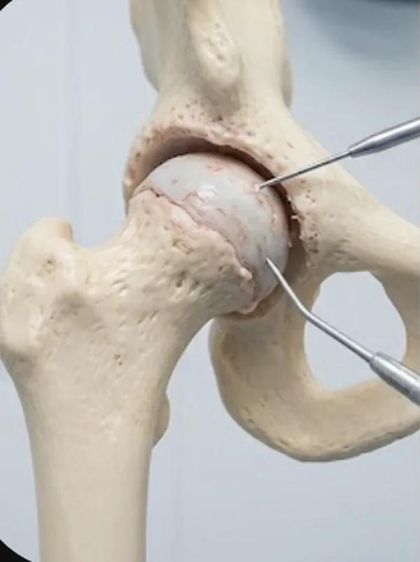

Η οστεοαρθρίτιδα είναι χρόνια εκφυλιστική πάθηση που χαρακτηρίζεται από φθορά του αρθρικού χόνδρου και αλλαγές στους γύρω ιστούς. Συχνά προκαλεί πόνο στην κίνηση, δυσκαμψία, περιορισμό κινητικότητας και δυσκολία σε περπάτημα ή σκάλες.
Η θεραπεία εξαρτάται από τη βαρύτητα και μπορεί να περιλαμβάνει απώλεια βάρους, φυσικοθεραπεία, φαρμακευτική αγωγή, ενδοαρθρικές ενέσεις και αλλαγές στον τρόπο ζωής. Σε προχωρημένα στάδια μπορεί να απαιτηθεί αρθροπλαστική.
Μέτρα συντηρητικής αντιμετώπισης
Στα αρχικά και μέτρια στάδια, ένα καλά δομημένο συντηρητικό πλάνο μπορεί να μειώσει σημαντικά τον πόνο, να βελτιώσει την κινητικότητα και να καθυστερήσει την ανάγκη για χειρουργείο. Τα μέτρα δεν λειτουργούν μεμονωμένα: συνδυάζονται και προσαρμόζονται στο στάδιο της πάθησης και στις ανάγκες κάθε ασθενούς.
- Έλεγχος σωματικού βάρους: ακόμη και μικρή απώλεια βάρους μειώνει πολλαπλάσια το φορτίο που δέχεται το γόνατο σε κάθε βήμα.
- Θεραπευτική άσκηση: ενδυνάμωση τετρακεφάλου και γλουτιαίων, ασκήσεις εύρους κίνησης, ιδιοδεκτικότητας και ισορροπίας, σε τακτική βάση.
- Αερόβια δραστηριότητα χαμηλής κρούσης: κολύμβηση, στατικό ποδήλατο ή βάδιση σε επίπεδο έδαφος, αντί για δραστηριότητες με άλματα.
- Φυσικοθεραπεία και φυσικά μέσα: εξατομικευμένο πρόγραμμα, θερμά ή ψυχρά επιθέματα και συμπληρωματικά μέσα για τον έλεγχο του πόνου.
- Φαρμακευτική αγωγή: παρακεταμόλη, τοπικά ή από το στόμα μη στεροειδή αντιφλεγμονώδη για περιορισμένο διάστημα, πάντα με ιατρική οδηγία και έλεγχο αντενδείξεων.
- Ενδοαρθρικές εγχύσεις: κορτικοστεροειδή για οξείες εξάρσεις, υαλουρονικό οξύ για τη λίπανση της άρθρωσης, PRP και άλλες βιολογικές θεραπείες σε επιλεγμένους ασθενείς.
- Υποστηρικτικά μέσα: μπαστούνι στην αντίθετη πλευρά από την πάσχουσα άρθρωση, ειδικοί πάτοι, κηδεμόνας αποφόρτισης και κατάλληλα υποδήματα με απορρόφηση κραδασμών.
- Τροποποίηση δραστηριοτήτων: αποφυγή παρατεταμένου γονατίσματος ή οκλαδόν θέσης, βαριάς άρσης και συχνής ανόδου σκάλας, με σωστή κατανομή της δραστηριότητας μέσα στην ημέρα.
- Εκπαίδευση και αυτοδιαχείριση: ρεαλιστικοί στόχοι, ρύθμιση της φόρτισης, καλή ποιότητα ύπνου και διακοπή καπνίσματος.
Το πλάνο επανεκτιμάται σε τακτά διαστήματα. Αν, παρά τη συνεπή εφαρμογή του, ο πόνος παραμένει έντονος και περιορίζει την καθημερινότητα, τότε συζητείται η χειρουργική αντιμετώπιση.
Τι περιλαμβάνει
- Κλινική και ακτινολογική αξιολόγηση
- Συντηρητικό πλάνο αντιμετώπισης
- Ενδοαρθρικές θεραπείες
- Καθοδήγηση φυσικοθεραπείας
- Εκτίμηση για αρθροπλαστική όπου χρειάζεται
Συχνές ερωτήσεις
Η οστεοαρθρίτιδα σημαίνει πάντα χειρουργείο;
Όχι. Πολλοί ασθενείς βελτιώνονται με συντηρητικό πλάνο, ειδικά στα αρχικά και μέτρια στάδια.
Πότε σκέφτομαι αρθροπλαστική;
Όταν ο πόνος και η δυσλειτουργία επηρεάζουν σημαντικά την καθημερινότητα και η συντηρητική θεραπεία δεν επαρκεί.
Μπορώ να συνεχίσω να περπατάω;
Συνήθως η σωστά δομημένη, ήπια άσκηση βοηθά. Το πρόγραμμα προσαρμόζεται στα συμπτώματα και στο στάδιο της πάθησης.